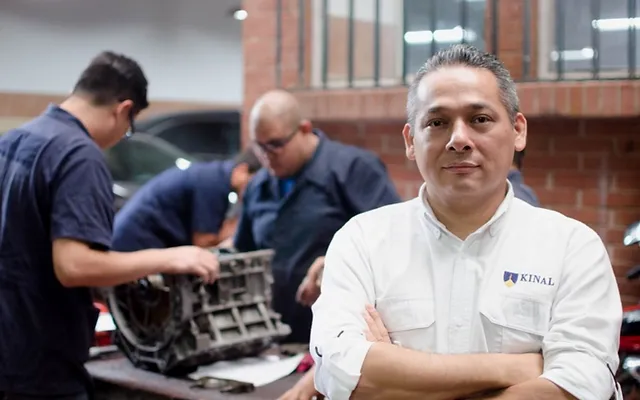

Carreras Técnicas
Contamos con más de 30 especialidades técnicas y tecnológicas que pueden favorecer tu crecimiento y/o tu inserción laboral.
Kinal es un Centro Educativo privado, no lucrativo, dirigido a la formación técnica profesional de jóvenes y adultos, de beneficio colectivo y asistencia social en favor de los sectores más necesitados de la comunidad. Nuestro valor fundamental es enseñar a realizar el trabajo bien hecho, que sea la base de la superación de alumnos y el medio para servir a los demás.
Contamos con más de 30 especialidades técnicas y tecnológicas que pueden favorecer tu crecimiento y/o tu inserción laboral.
Podemos diseñar conjuntamente el programa de formación profesional que mejor se adapte a tus necesidades de capacitación.
Kinal ofrece su programa de Educación General Básica para todos aquellos jóvenes que buscan una orientación técnica y excelencia académica.
Se trabajan los programas técnicos y académicos con jóvenes entre 16 y 20 años para llevarlos a realizar una tarea calificada en alguna especialidad técnica con tres años de duración. Al cabo de los tres años el joven es apto para trabajar en el ramo técnico de la especialidad que eligió estudiar; el título obtenido le permitirá ingresar a la universidad.
Dirigido al fortalecimiento de mandos medios y especialmente aquellos que han cursado una carrera técnica y desean continuar con estudios a nivel universitario. Estos estudios son avalados por la Universidad del Istmo.
Contamos con más de 30 especialidades técnicas y tecnológicas que pueden favorecer tu crecimiento y/o tu inserción laboral.
ESCUELA TÉCNICA
CICLO BÁSICO
DIVERSIFICADO
TOTAL
Cada donación que haces ayuda a la educación de un joven guatemalteco de escasos recursos a tener una educación de calidad.


Al visitante le puede ser algo abrumador al ingresar al sitio de FUNDACIÓN KINAL, es por esta razón que decidí simplicarficarlo un poco más.